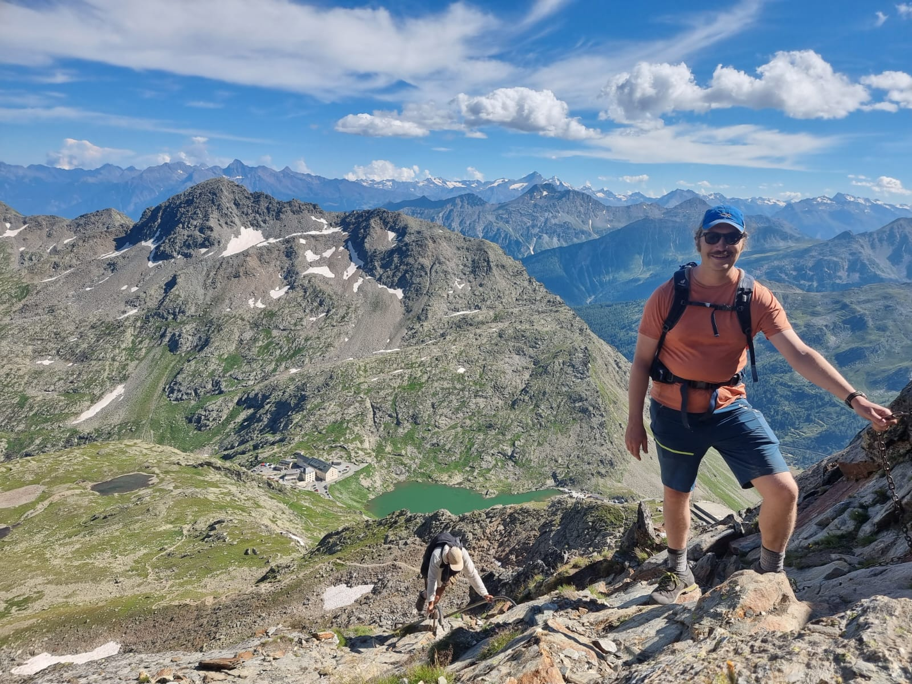

I am a computational biologist living in Munich. I use bioinformatics to study evolutionary, molecular, and organismal biology. I am currently a research scientist and Habilitand in the Chair for Animal Systems Genomics at Ludwig-Maximilians-Universität in Munich and a consultant for the Warren Lab at the Bond Life Sciences Center at the University of Missouri.